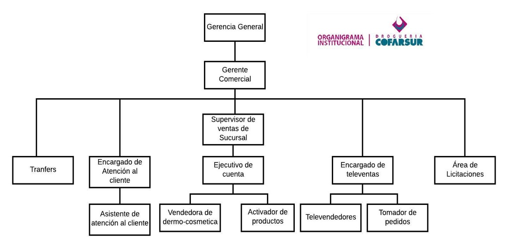
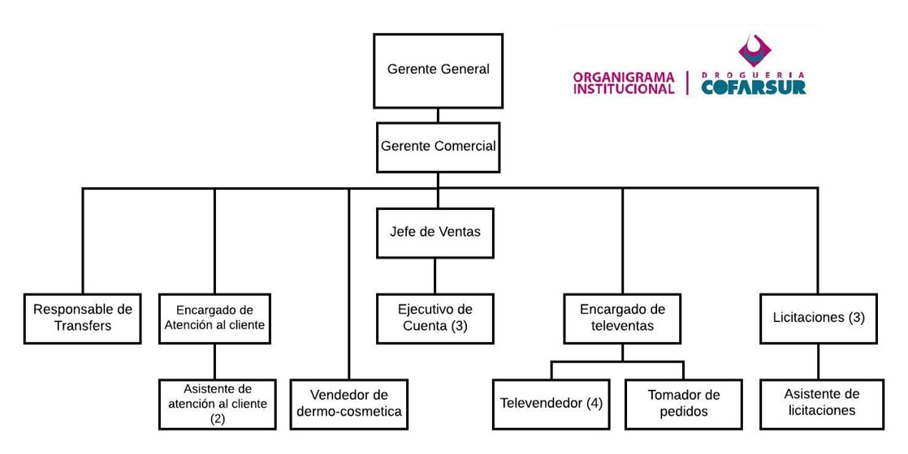

Diferencias entre el organigrama oficial y el organigrama relevado


Características de la organización:
- Estructura funcional.
- Fallas en la coordinación entre las áreas.
- División de trabajo y coordinación.
- Jerarquía del área.
Diagnóstico
Propuestas de solución
- Redefinición de la estructura del área, redistribución de las funciones.
- Nuevo manual de funciones.
- Reuniones quincenales de puestos operativos con personas del mando medio. Informe por escrito vía e-mail luego de la reunión quincenal de puestos medios